Objectives
Start the development of an API for the donation service, focusing initially on providing access to the Candidates model. Implement the API using simple REST principles.
First Simple API Endpoint: Get All Candidates
Introduce a new folder inside app called api, and place the following module in that folder:
app/api/candidates.js
'use strict';
const Candidate = require('../models/candidate');
const Candidates = {
find: {
auth: false,
handler: async function(request, h) {
const candidates = await Candidate.find();
return candidates;
}
},
};
module.exports = Candidates;This handler returns all candidates, or a standard error message. Note that we have set no authentication:
auth: false,... which means that this call is open, and is not guarded by the session based authentication currently set as the default for our application.
routesapi.js
We new include a new routes file specifically to service the API routes:
const Candidates = require('./app/api/candidates');
module.exports = [
{ method: 'GET', path: '/api/candidates', config: Candidates.find }
];Place this in the root of the project, which should look like this now:
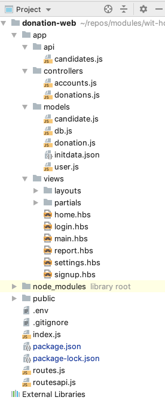
index.js
Finally, we need to include this route into the application server - this is in index.js - we can add it after the inclusion of the UI routes we have created so far::
server.route(require('./routes'));
server.route(require('./routesapi'));We can run the app now, and verify that the route can be accessed:
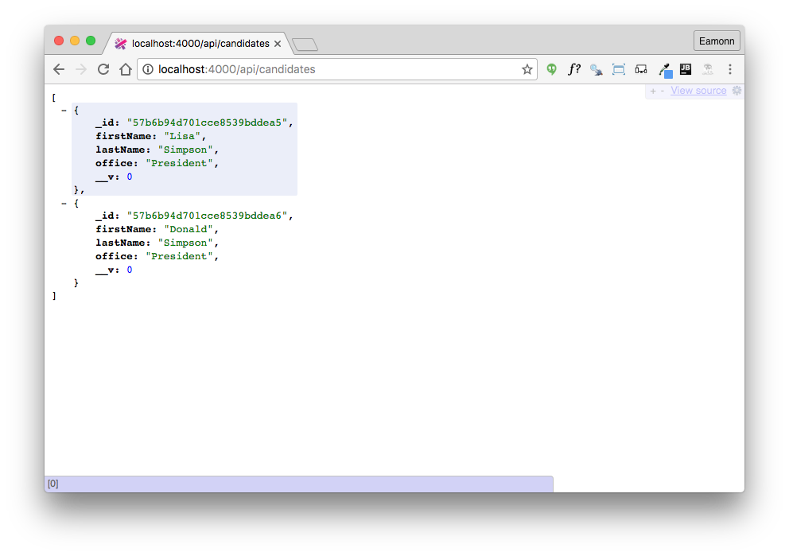
We also can see the seeded objects in the webstorm console:
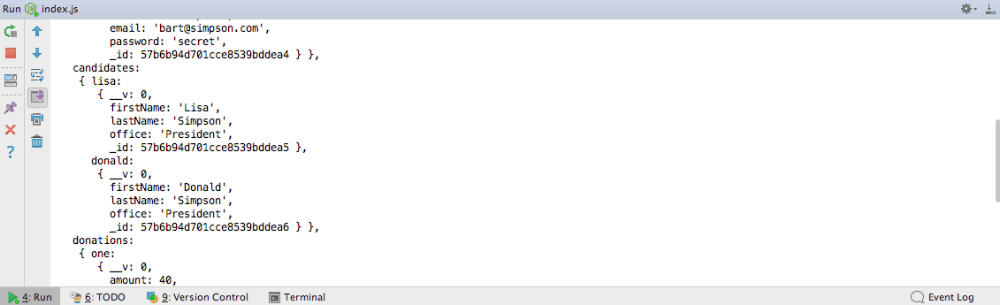
Note that these objects (including ids) should be identical.
Get Candidate Endpoint
The first endpoint we have just implemented retrieves all candidates. We can also introduce a route to retrieve a single candidate:
routesapi.js
{ method: 'GET', path: '/api/candidates/{id}', config: Candidates.findOne }app/api/candidatesapi.js
findOne: {
auth: false,
handler: async function(request, h) {
const candidate = await Candidate.findOne({ _id: request.params.id });
return candidate;
}
}In order to retrieve the candidate, we will need the ID for the candidate of interest:
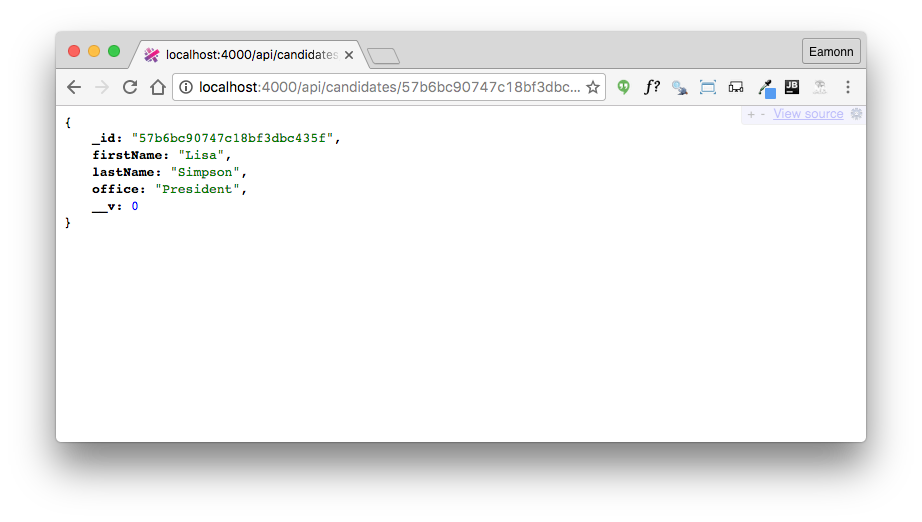
The Id changes every time we launch the application, as our database seeder clears all collections each time. You can copy paste a valid ID from the start up console, where we have listed all seeded objects.
If we specify an unknown id, we will generate the this error:
{
statusCode: 500,
error: "Internal Server Error",
message: "An internal server error occurred"
}This is not quite the correct response - which should be an official http not found error. We can generate this using the Boom library. Import this now:
const Boom = require('boom');This is a revised version of the findOne handler:
handler: async function(request, h) {
const candidate = await Candidate.findOne({ _id: request.params.id });
if (!candidate) {
return Boom.notFound('No Candidate with this id');
}
return candidate;
}Try an incorrect id - make sure the test id is the same number of characters as a valid id. It should respond with:
{
statusCode: 404,
error: "Not Found",
message: "No Candidate with this id"
}Now try an incorrect route - but this time an id for some random length. For example
Note also, that if we use an incorrect id - for instance:
This will, however, yield:
{
statusCode: 500,
error: "Internal Server Error",
message: "An internal server error occurred"
}This is a result of mongo throwing an exception when an invalid object id is supplied (incorrect length). The internal error will be something like:
Cast to ObjectId failed for value "5c725b31f8508df62d49fe60sfefgwg" at path "_id" for model "Candidate"This is a revised version - which will generate a better error report in this circumstance:
findOne: {
auth: false,
handler: async function(request, h) {
try {
const candidate = await Candidate.findOne({ _id: request.params.id });
if (!candidate) {
return Boom.notFound('No Candidate with this id');
}
return candidate;
} catch (err) {
return Boom.notFound('No Candidate with this id');
}
}
}Verify that you get a 404 now with an invalid id.
Testing the Endpoints: Postman
Using a browser to retrieve and verify the behaviour of api endpoints is a useful sanity check, but not viable as our endpoints become more sophisticated.
This is a popular tool for exercising these endpoints:
Install the standalone version now. We will make use of it occasionally as we devise more interesting api endpoints:
Build some request now for one of our endpoints:
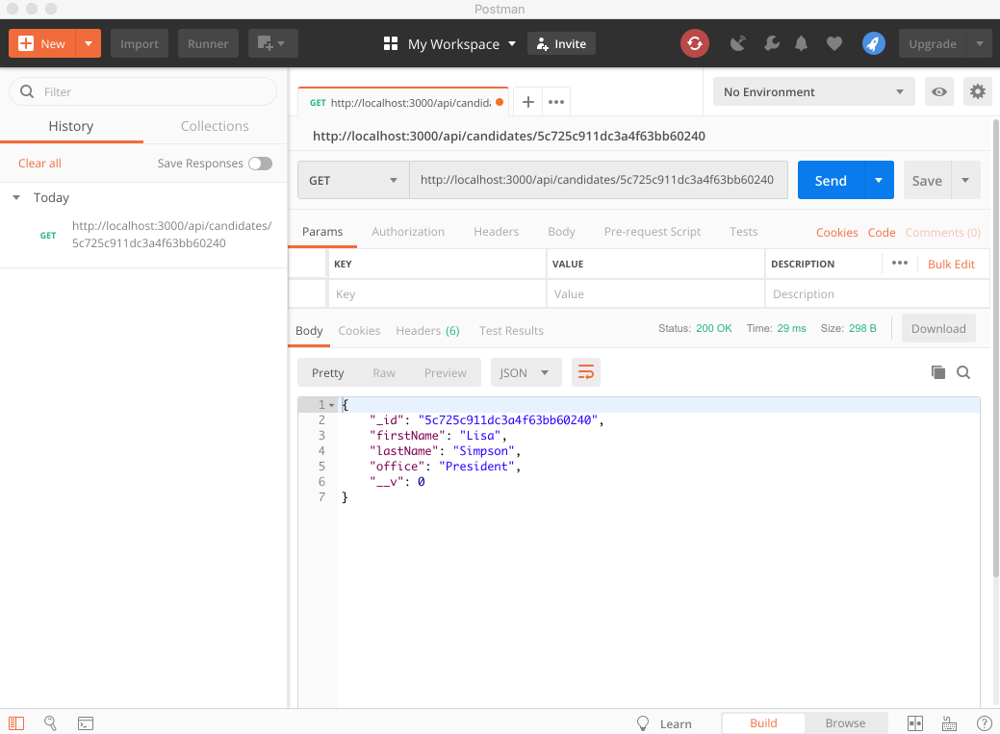
You can save and organise requests into collections:
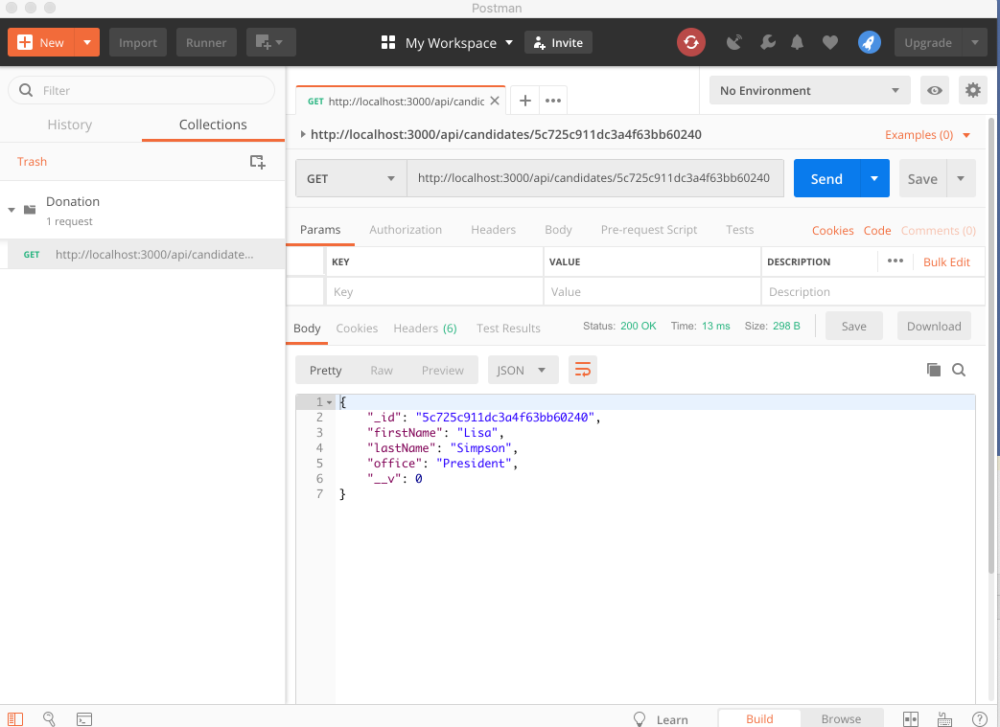
This can be useful for exercising more complex APIs
Testing the Endpoints: TDD Tools
Although Postman is useful for exploratory development, developing APIs requires a more robust testing strategy. This is the realm of Test Driven Development:
Facilitated by specialized tools and techniques. The most fundamental set of tools are based around the so-called X-Unit pattern:
We are going to use these two X-Unit related tools:
To use these tools, we need install both extensions to our WebStorm IDE and also the appropriate javascript libraries.
Mocha support should already be part of your WebStorm installation:
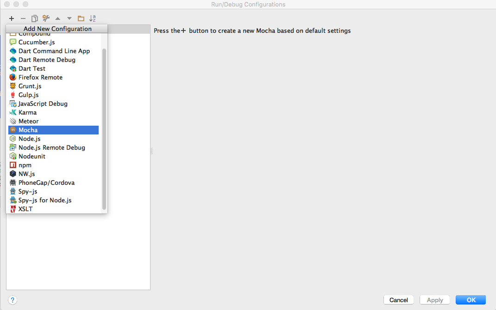
We will explore this in a moment.
To make use of TDD in our app, we need to instal the mocha and chai modules:
npm install mocha -save-dev
npm install chai -save-devNode the -save-dev switch. This establishes the libraries as development, not production, libraries - required only for dev/test purposes.
Package.json includes these references in a separate section:
{
"name": "donation-web",
"version": "1.0.0",
"description": "",
"main": "index.js",
"scripts": {
"start": "node index.js",
"test": "echo \"Error: no test specified\" && exit 1"
},
"author": "",
"license": "ISC",
"dependencies": {
"boom": "^7.3.0",
"dotenv": "^6.2.0",
"handlebars": "^4.0.12",
"hapi": "^18.0.0",
"hapi-auth-cookie": "^9.1.0",
"inert": "^5.1.2",
"joi": "^14.3.1",
"mais-mongoose-seeder": "^1.0.7",
"mongoose": "^5.4.7",
"vision": "^5.4.4"
},
"devDependencies": {
"chai": "^4.2.0",
"mocha": "^6.0.1",
"prettier": "^1.16.0"
},
"prettier": {
"singleQuote": true,
"printWidth": 120
}
}First Simple Test
Create a new folder in your project called test and create candidateapitest.js module:

test/candidateapitest.js
'use strict';
const assert = require('chai').assert;
suite('Candidate API tests', function () {
test('get candidates', function () {
assert.equal(1, 1);
});
});This is a simple test, guaranteed to succeed.
In order to run it, select the file and select run from the context menu. We should see the built in Mocha test runner:
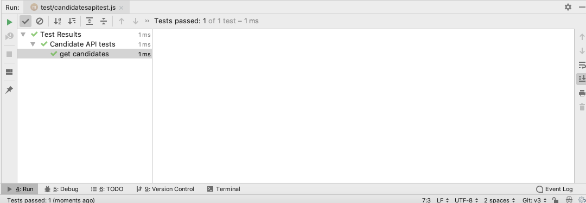
If your WebStorm installation does not auto generate the above run configuration, you may need to manually establish a run configuration in the IDE:
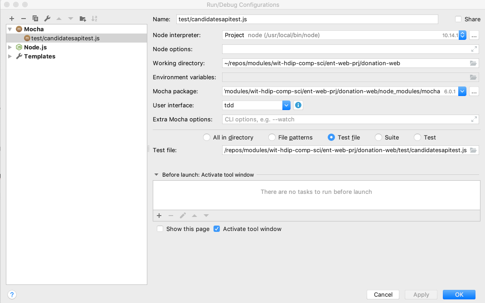
In order to gain familiarity with the Mochal test runner, change the assert to be guaranteed to fail:
assert.equal(1, 10);Now rerun the test - this is how test failures are reported:
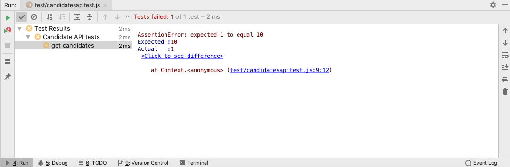
First Mocha API Test
We can now compose a test, entirely in javascript, to exercise the api we have just created. First, we need a http client:
Install this in the project now:
npm install axios -save-devNow a new version of the test:
test/candidateapitest.js
'use strict';
const assert = require('chai').assert;
const axios = require('axios');
suite('Candidate API tests', function () {
test('get candidates', async function () {
const response = await axios.get('http://localhost:3000/api/candidates');
console.log(response.data);
});
});Running the test will echo the returned candidates:
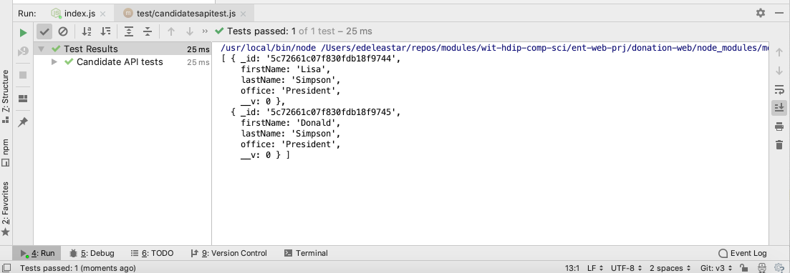
All tests should have assertions, and rarely would we make use of the console. Replace the test body with the following:
test('get candidates', async function () {
const response = await axios.get('http://localhost:3000/api/candidates');
const candidates = response.data;
assert.equal(2, candidates.length);
});This test should pass. How do we know there are exactly two candidates? Recall that we seeded the database with the contents of app/models/initdata.json
{
"users": {
"_model": "User",
"homer": {
"firstName": "Homer",
"lastName": "Simpson",
"email": "homer@simpson.com",
"password": "secret"
},
"marge": {
"firstName": "Marge",
"lastName": "Simpson",
"email": "marge@simpson.com",
"password": "secret"
},
"bart": {
"firstName": "Bart",
"lastName": "Simpson",
"email": "bart@simpson.com",
"password": "secret"
}
},
"candidates": {
"_model": "Candidate",
"lisa": {
"firstName": "Lisa",
"lastName": "Simpson",
"office": "President"
},
"donald": {
"firstName": "Donald",
"lastName": "Simpson",
"office": "President"
}
},
"donations": {
"_model": "Donation",
"one": {
"amount": 40,
"method": "paypal",
"donor": "->users.bart",
"candidate": "->candidates.lisa"
},
"two": {
"amount": 90,
"method": "direct",
"donor": "->users.marge",
"candidate": "->candidates.lisa"
},
"three": {
"amount": 430,
"method": "paypal",
"donor": "->users.homer",
"candidate": "->candidates.donald"
}
}
}We can extend the test to make sure we actually retrieve the candidates as specified in the above data set:
test('get candidates', async function () {
const response = await axios.get('http://localhost:3000/api/candidates');
const candidates = response.data;
assert.equal(2, candidates.length);
assert.equal(candidates[0].firstName, 'Lisa');
assert.equal(candidates[0].lastName, 'Simpson');
assert.equal(candidates[0].office, 'President');
assert.equal(candidates[1].firstName, 'Donald');
assert.equal(candidates[1].lastName, 'Simpson');
assert.equal(candidates[1].office, 'President');
});This test should pass.
Testing our second route involves a little more work, as we have to request a single candidate by an ID. We get this ID from the request for all candidates.
This new test demonstrates the technique:
test('get one candidate', async function () {
let response = await axios.get('http://localhost:3000/api/candidates');
const candidates = response.data;
assert.equal(2, candidates.length);
const oneCandidateUrl = 'http://localhost:3000/api/candidates/' + candidates[0]._id;
response = await axios.get(oneCandidateUrl);
const oneCandidate = response.data;
assert.equal(oneCandidate.firstName, 'Lisa');
assert.equal(oneCandidate.lastName, 'Simpson');
assert.equal(oneCandidate.office, 'President');
});Verify now that out two tests pass:
'use strict';
const assert = require('chai').assert;
const axios = require('axios');
suite('Candidate API tests', function () {
test('get candidates', async function () {
const response = await axios.get('http://localhost:3000/api/candidates');
const candidates = response.data;
assert.equal(2, candidates.length);
assert.equal(candidates[0].firstName, 'Lisa');
assert.equal(candidates[0].lastName, 'Simpson');
assert.equal(candidates[0].office, 'President');
assert.equal(candidates[1].firstName, 'Donald');
assert.equal(candidates[1].lastName, 'Simpson');
assert.equal(candidates[1].office, 'President');
});
test('get one candidate', async function () {
let response = await axios.get('http://localhost:3000/api/candidates');
const candidates = response.data;
assert.equal(2, candidates.length);
const oneCandidateUrl = 'http://localhost:3000/api/candidates/' + candidates[0]._id;
response = await axios.get(oneCandidateUrl);
const oneCandidate = response.data;
assert.equal(oneCandidate.firstName, 'Lisa');
assert.equal(oneCandidate.lastName, 'Simpson');
assert.equal(oneCandidate.office, 'President');
});
});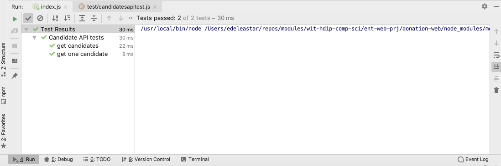
Create and Delete Candidate Endpoints
We can also define a routes to update the candidates collection:
routesapi.js
{ method: 'POST', path: '/api/candidates', config: CandidatesApi.create },
{ method: 'DELETE', path: '/api/candidates/{id}', config: CandidatesApi.deleteOne },
{ method: 'DELETE', path: '/api/candidates', config: CandidatesApi.deleteAll },- The first route will be used to create a single candidate
- The second route delete a single candidate (id must be provided)
- The third route deletes all candidates
These are the implementations of the handlers for these routes:
create: {
auth: false,
handler: async function(request, h) {
const newCandidate = new Candidate(request.payload);
const candidate = await newCandidate.save();
if (candidate) {
return h.response(candidate).code(201);
}
return Boom.badImplementation('error creating candidate');
}
},
deleteAll: {
auth: false,
handler: async function(request, h) {
await Candidate.remove({});
return { success: true };
}
},
deleteOne: {
auth: false,
handler: async function(request, h) {
const candidate = await Candidate.remove({ _id: request.params.id });
if (candidate) {
return { success: true };
}
return Boom.notFound('id not found');
}
}These routes cannot be considered complete until a set of tests verify their operation.
Here is a test to verify operation of the Create Candidate route:
test('create a candidate', async function () {
const candidatesUrl = 'http://localhost:3000/api/candidates';
const newCandidate = {
firstName: 'Barnie',
lastName: 'Grumble',
office: 'President',
};
const response = await axios.post(candidatesUrl, newCandidate);
const returnedCandidate = response.data;
assert.equal(201, response.status);
assert.equal(returnedCandidate.firstName, 'Barnie');
assert.equal(returnedCandidate.lastName, 'Grumble');
assert.equal(returnedCandidate.office, 'President');
});Note how to invoke a POST route using our sync-request library:
const newCandidate = {
firstName: 'Barnie',
lastName: 'Grumble',
office: 'President',
};
const response = await axios.post(candidatesUrl, newCandidate);Run this test now and verify that is passes.
Exercises
Archive of the project so far:
Exercise 1:
You may notice that some of the other tests are a bit fragile - as they may fail of the server is not restarted. See if you can rethink the tests such that they always run successfully.
Exercise 2 : Additional Unit Tests
Write tests for the untested endpoints:
- delete a singe candidate
- delete all candidates
Exercise 3: Postman
Postman can be used to test these new POST and DELETEroutes. Try to figure out how to do this.
HINT: Below is an example of a successful create candidate endpoint request:
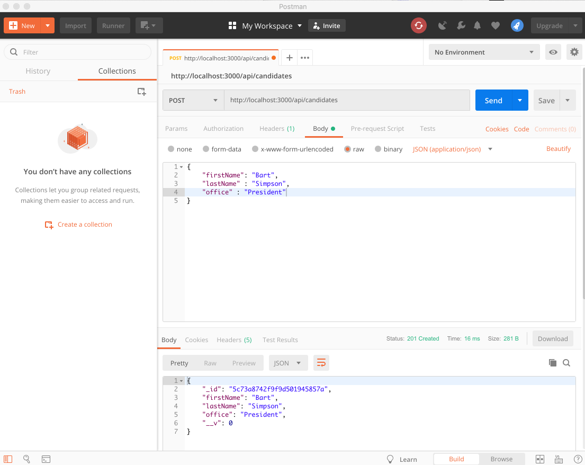
You will need to spend some time configuring the options and parameters for the request. Most of these are visible on the above screen shot.